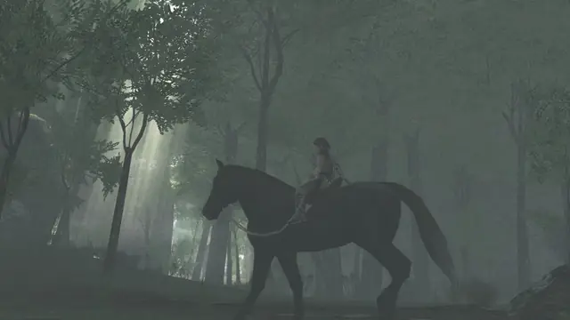
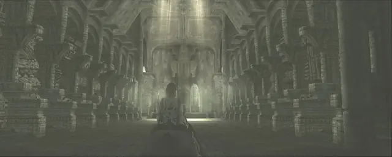
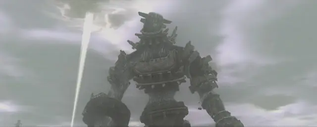
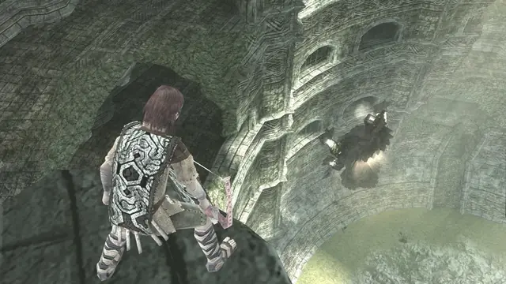
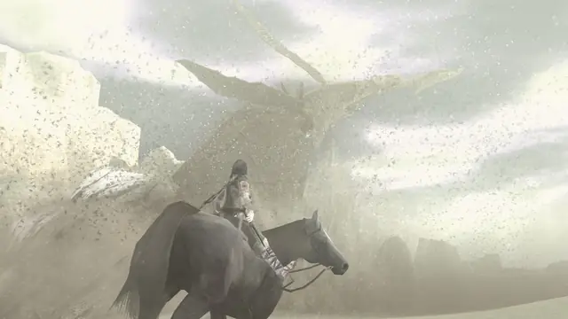
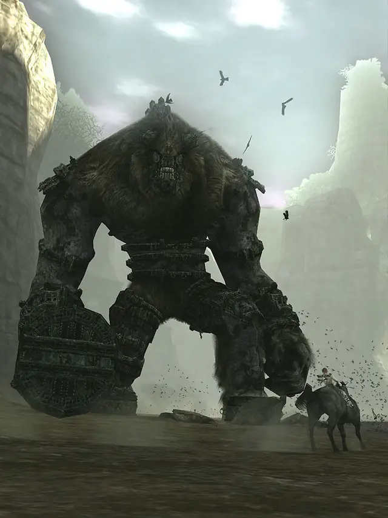
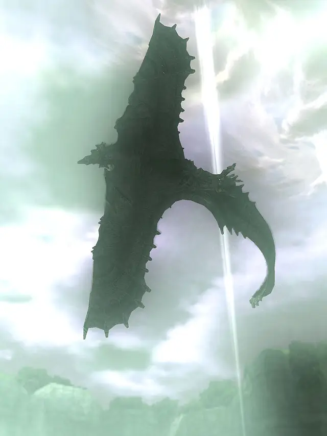
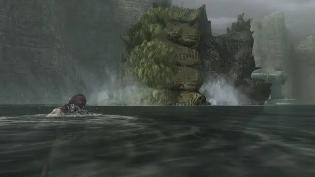
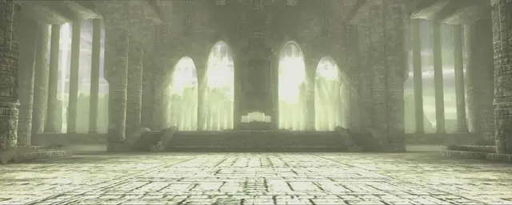

The game already runs from start to end on both machines. It got there in two steps. The recompilation turned all of the PS2's MIPS code into C++ that compiles for ARM and x86, and replaced the PS2 hardware it talked to. The decompilation, still going, rewrites that machine-translated code by hand as readable native code, which is what makes it fast enough on the Vita.
Loading the latest measurement…

PS2Recomp reads the game's executables and writes every MIPS function out as C++. Nothing is interpreted at run time. The PS2's graphics chip, vector units, DMA and sound processor were then replaced, piece by piece, by native code that draws with Metal on the Mac and with the Vita's GPU.
What the game draws, drawn from its own data instead of emulating the PS2's GS. One tile per feature.
The chips the game was written for. Each one is now handled natively.
Every feature on both maps works natively. Picture and timing fixes still land, but the remaining work on speed is the decompilation below.

Recompiled code is correct but slow: every guest register lives in memory, every float goes through PS2 rounding rules, and every call goes through a table. A decompiled function is written by hand as plain C++, then proven equal to the recompiled one on the same machine state before it replaces it. It is a functional decompilation, not a matching one: the goal is the same behaviour, faster, not a byte-identical rebuild of the original executable. The hottest functions go first, so a small share of the code already carries a large share of the time.
How much there is to write. Click an area to open its functions. Each area of the game is sized by its MIPS code and split into what is already native and what is not. Most of the game is code that runs rarely (menus, events, one boss's behaviour), so this map stays mostly grey for a long time.
What decides the frame rate. Click an area to see which functions take the time. Each area is sized by its share of the Vita game thread's instructions in a profile of the same route (shrine, ride and plains). Green here is time already won; grey is where the next rounds can still win time.
| Area | Code native | Functions | Time native | Time in MIPS |
|---|
Each point is one measurement. The time share is measured from round 32 on; the call share switched to a larger call sample on 2026-10-27, which explains its dip.

The recompiled functions that cost the game thread the most, from the same profile. They are spread thin: no single one is above two percent, so the gains now come from rewriting whole subsystems. The address is the function's place in the PS2 executable.
| Function | Area | Time |
|---|
| Function | Area | Time |
|---|
| Function | Time |
|---|

Work happens in rounds: one target, a change that must keep the game exactly the same, a measurement. Console figures come from the real PS Vita; the others from a Vita3K tuned to match it.
What all of this is for: Fumito Ueda and Team Ico’s 2005 game, playable natively on a Mac and in the hand on a PS Vita.



